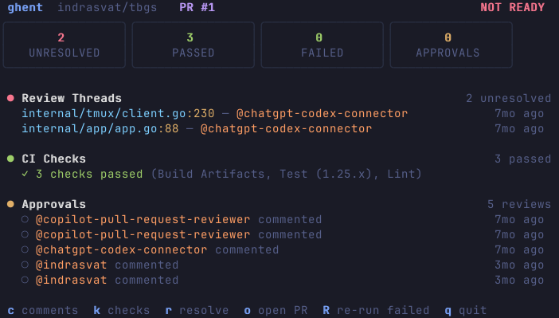
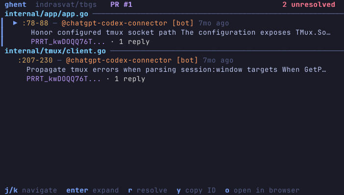
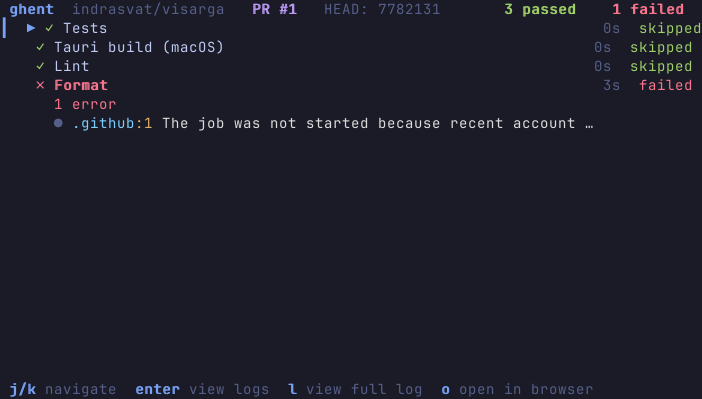

schema-stable
versioned envelope
Field names don't drift. Harnesses pin to it.
Merge-ready verdicts for the AI agents that open your PRs.
Your agents do the work. gh-ghent gives them one high-fidelity signal for when a PR is actually done, so they finish the last mile instead of stopping at creation.
the verdict, performed. each stage clears, the runner crosses the tape, the exit code flips. real gh ghent status fields.
Coding agents are brilliant at the takeoff and prone to quitting on the last mile. They push, open the PR, and call it done. The review lands in an empty room. DNF: did not finish.
deterministic loop. zero guesswork.
One command, run until the verdict flips. ghent always names the single next blocker, so the agent knows exactly what finishing requires.
One call: checks, threads, reviews, mergeability.
A red check, an open thread. Exit 1 says keep going.
The agent pushes the fix and answers the reviewer.
Resolve the thread, run the same command again.
is_merge_ready. The verdict flips. Ship it.
unified verdict. any output.
--await-review replaces the agent's gut with a reading: every check, every thread, every reviewer, plus bounded tail probes so a late comment never lands after a premature merge.
polling, confirming, settled. It holds through the review tail before declaring ready.
high, medium, low. The agent branches on certainty, not a coin flip.
is_merge_ready maps straight to the exit code. No screen-scraping.
// gh ghent status --pr 1 --format json { "is_merge_ready": true, "checks": { "overall_status": "pass", "pass_count": 10 }, "comments": { "unresolved_count": 0 }, "review_monitor": { "phase": "settled", "confidence": "high" } } // exit 0
# gh ghent status --pr 1 --format md ## PR #1 — READY TO MERGE - is_merge_ready: true - checks: 10 passed, 0 failed - unresolved threads: 0 - review: settled · high confidence exit 0
<!-- gh ghent status --pr 1 --format xml --> <status pr="1" ready="true"> <checks pass="10" fail="0"/> <comments unresolved="0"/> <review phase="settled"/> </status> <!-- exit 0 -->
same verdict, the format the consumer wants.
built for humans. wired for agents.
A real Bubble Tea TUI for humans in the terminal, schema-stable JSON for agents without eyes. Every frame is ghent rendering real PRs.



engineered for scripting.
The loop reads one number. No agent ever parses a dashboard.
Field names don't drift. Harnesses pin to it.
Holds for late reviews, then settles. Never hangs.
Inherits your gh auth. Watch your PRs or a dependency's. Zero config.
from the session logs.
Not testimonials. Real lines from autonomous Codex and Claude sessions that ran the loop to a merge.
02:01:18Z visarga#4 status: phase=confirming confidence=medium → 1 unresolved (vite.config.js, @chatgpt-codex-connector [P2]) "keeping the loop running a bit longer so we don't merge immediately and then get a late bot comment." — codex 02:03:54Z visarga#4 reply --resolve PRRT_kwDO… ok 02:08:14Z visarga#4 status: phase=settled confidence=high is_merge_ready=true → exit 0 "the PR is settled: no unresolved threads, all checks passing. squash-merging now." — codex
install the verdict.
One command and your agents stop dropping the ball at PR creation. The gh extension keeps itself updated.